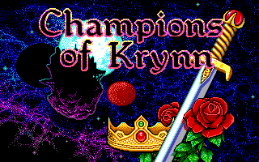
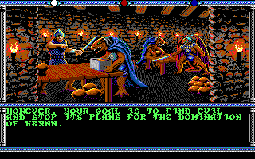
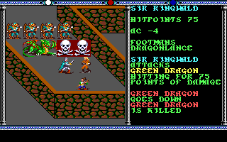

Entwickler: Strategic Simulations, Inc. (SSI)
Publisher: Strategic Simulations, Inc. (SSI)
Genre: Rollenspiel
Plattform: Amiga, DOS, Commodore 64
Erscheinungsjahr: 1990
Champions of Krynn entführt den Spieler in die Dragonlance-Welt Krynn. Mit einer selbst zusammengestellten Heldengruppe gilt es, die Streitkräfte der bösen Göttin Takhisis aufzuhalten. Klassische Dungeons, taktische rundenbasierte Kämpfe und zahlreiche Quests sorgen für ein umfangreiches Rollenspielerlebnis.
9/10 – Champions of Krynn gehört für mich zu den besten klassischen Dungeons & Dragons-Rollenspielen. Atmosphäre, taktische Kämpfe und die Dragonlance-Welt machen das Abenteuer bis heute besonders.



Champions of Krynn überzeugt auch heute noch durch seine gelungene Mischung aus klassischem Rollenspiel, taktischen Kämpfen und einer dichten Fantasy- Atmosphäre. Für Fans traditioneller Dungeons & Dragons-Abenteuer ist der Titel bis heute ein echter Klassiker.